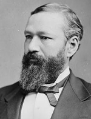

|

|

|
|
|
The only black American to serve as governor of a state until the late
twentieth century, Pinckney Benton Stewart Pinchback was born near Macon,
Georgia, the son of a Mississippi planter and a recently freed black woman. At
the age of nine, he was sent to Cincinnati to be educated. Subsequently, he
worked as a cabin boy and later a steward on riverboats on the Mississippi,
Missouri, and Red rivers and became a well-known riverboat gambler. In May 1862,
the light-skinned Pinchback abandoned a steamer in Yazoo City, Mississippi, made
his way to New Orleans, and enlisted in a white Union regiment as a private. In
August, he was assigned by General Benjamin F. Butler to recruit black soldiers
and became a captain in the 2nd Louisiana Native Guards, subsequently designated
the 74th U.S. Colored Infantry. He resigned from the army in September 1863
because of discriminatory treatment by white officers, and he signed petitions
against unequal pay for black soldiers and unfair treatment of black officers.
He then reentered the army as a recruiter, but he resigned again when he was
refused a commission as a captain by General Nathaniel P. Banks.
In 1863 and 1864 Pinchback became involved in the movement for black suffrage
centered in New Orleans. As early as November 1863, he spoke at a rally for
political rights in the city. After the death of President Lincoln, he left for
Alabama, where he spent two years speaking at black meetings and pressing for
black education. In a speech in Montgomery, he urged the freedmen to organize
for self-help, observing, "Wealth is the great lever that moves the earth."
After returning to Louisiana in 1867, Pinchback was elected to the
constitutional convention of 1868, where he wrote the provision guaranteeing all
citizens equal treatment on transportation and by licensed businesses. He served
in the state Senate, 1868-71, and became lieutenant governor on the death of
Oscar J. Dunn, although he had sponsored the civil rights bill vetoed by
Governor Henry C. Warmoth. In 1872 occurred the famous "railroad race," in which
Warmoth and Pinchback, both out of the state, hurried back to Louisiana, with
Warmoth arriving first, preventing Pinchback from making decisions as acting
governor. When Warmoth was impeached, Pinchback became governor, serving 9
December 1872 to 13 January 1873.
Throughout Reconstruction, Pinchback was a major power broker in the
byzantine factionalism of the Republican party. But he found it difficult to
turn his power into major elective office. In 1873-74 he became the only person
in American history simultaneously to claim seats in the U. S. House and Senate,
but he was denied a place by both chambers because of charges of election
irregularities and bribery. In 1871, he sued the New Orleans, Mobile, and
Chattanooga Railroad for denying him sleeping car accommodations.
A co-owner of the New Orleans Louisianian, Pinchback also operated a
brokerage and commission house with black officeholder C. C. Antoine. According
to the 1870 census, Pinchback owned $6,000 in real estate and $4,000 in personal
property, and his wealth increased substantially during the 1870s. He was one of
those Reconstruction leaders guilty of corruption. In 1870, Pinchback, then a
state senator, secured an outright grant of $25,000 for the Mississippi River
Packet Company, of which he was an incorporator. While serving on the New
Orleans parks commission, he and another member bought a tract of land for
$600,000 and immediately sold it to the city at a $200,000 profit. In an 1872
interview, Pinchback candidly stated: "What money I have, I made by speculation
upon warrants, bonds and stocks ... I belonged to the General Assembly, and knew
about what it would do, etc. My investments were made accordingly."
After Democrats "redeemed" Louisiana in 1877, Pinchback was appointed to the
state board of education. He initially opposed the Kansas Exodus movement of
1879, but subsequently his newspaper urged black victims of political
intimidation to leave the state. He served in the constitutional convention of
1879; attended the Republican national conventions of 1880, 1884, and 1892; and
held office as an internal revenue agent, 1879-82, and surveyor of customs for
New Orleans, 1882-86. He was also a trustee of Southern University in the 1880s.
In 1893, Pinchback moved his family to Washington, D.C., where he practiced
law, was employed as a U.S. marshal, and became a prominent member of the Four
Hundred, as the city's black elite was called. He was renowned for his lavish
entertainments and elegant demeanor. He died in Washington.
Source: Eric Foner, Freedom's Lawmakers: A Directory of Black
Officeholders during Reconstruction (New York: Oxford University Press,
1993), 171-172.
|